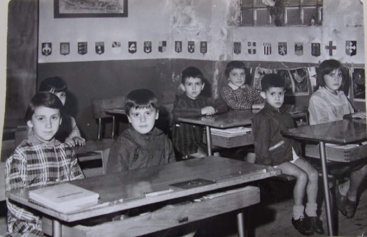

Aujourd'hui l'ancienne école a été réaffectée en appartement, nouveau local de la mairie et salle des fêtes.
Pour avoir été un des derniers élèves de cette école fermée en 1971, je peux encore témoigner que des élèves de l'élémentaire / maternelle ont usé les bancs de ce lieu. L'avant dernière année, nous étions six de tout age, moi le plus jeune avec mes 4 ans. Le déménagement de ceux de la gare et le passage en sixième de certains ont condamné à la fermeture l'établissement, (et mon retour à Toulouse suivre ma grande section de maternelle, retardant mon apprentissage de la lecture d'un an...). Rose-Marie est restée encore un an, seule élève de l'école l'année 1970-1971.

L'école vue de la route départementale.
Le premier bâtiment en arrivant au village est l'ancienne école
(Difficile de la rater).

l'école - vue depuis la place.
A son fronton est noté sa réaffectation en mairie à l'initiative de l'ancien maire Noël (Emile) Rios lors de la rénovation complète du bâtiment en 2003.


L'école - vue arrière
La cours de l'école et le bâtiment
A titre personnel, je ne me souviens pas que nous ayons utilisé cet espace pour les récréations (?), mais cet usage devait exister quand il y avait séparation des filles et des garçons (qui assurait la garderie ?).

L'école - vue arrière, la classe et le préau couvert
Lors de la construction il était prévu 1 classe en haut donnant sur une placette devant la mairie et un préau ouvert (sans les portes vitrées) en bas.
Le gymnase en bas et le préau fermé ont été réaménagée en salle des fêtes dès l'après guerre.
C'est dans cette salle que tous les 11 novembre, jour de la Saint Martin se produisait des groupes de musiciens pour la fête locale.
L'accès à la salle se faisait uniquement par l'escalier intérieur depuis la place (la porte marquée "Mairie" et "Bibliobus" sur la vue depuis la place).
(Attention à ceux qui avaient trop bu de ne pas tomber dans l'escalier...)
Aujourd'hui s'il n'y a plus de fête locale à proprement parler, la salle est toujours utilisée pour les grandes occasions regroupant l'ensemble de la population et peut être louée ou utilisée à la demande.
Mais l'accès ne se fait plus que par un escalier extérieur ou par le bord de l'Aude en passant par la cours.
La classe en haut sert aujourd'hui de mairie en remplacement du bâtiment que nous verrons sur la place de l'ancienne école.

L'école - vue arrière - les logements de fonction
et l'ancien gymnase
La salle des fêtes englobe aujourd'hui tout le bas du bâtiment.
Le haut a été aménagé en appartement pour location.
La plaque commémorative des morts pour la France que nous pouvons voir apposée au mur, initialement uniquement dans l'église, a été refaite et placée dans l'escalier accédant à la cours lors de la rénovation de l'école, puis finalement fixée à coté de la porte dans la cours.
La construction de l'école date de 1882 (décision de faire), 1885 (établissement des plans et adjudication), 1886 (acquisition des 4 terrains nécessaires) à 1889 (réception définitive des travaux). Le gros de la charge financière revient à l'Etat (le bâtiment pour 12000 francs). Charge à la commune de procurer le terrain, d'équiper en mobilier, d'aménager la cours et de couvrir les imprévus : soit un budget de 4000 francs en partie couvert par un emprunt de 3200 francs à la "caisse des écoles" (caisse prévue par l'Etat pour permettre aux petites communes de s'équiper à moindre frais).
L'école était mixte et devait pouvoir accueillir 18 filles et 18 garçons, (avec entrée/vestiaire et cours de récréation des filles et celles des garçons différentes...) ci-dessous les plans d'origine1


L'école - localisation, plan d'ensemble, sous-sol, façade arrière,
étage, façade avant, plans de coupe

Pour construire l'école 4 parcelles ont du être achetées
(dont une à mon arrière-arrière-grand-mère)

Cette vue de la cours de l'école montre également les toilettes, supprimées depuis
Photo transmise par Rose-Marie Manaud

Cette classe devait encore se tenir dans les anciens locaux, puisque l'inauguration du nouveau batiment date de 1889...
Une photo de la classe de 1920 est parue dans "Communautés de commune du canton d'Axat" - à suivre...
Classe 1968 ou à peu près...
Si vous détenez d'autres photos de classe de St Martin n'hésitez pas à me les communiquer, je me ferais un plaisir de les rajouter.
1 Archives départementales de l'Aude - OP2780